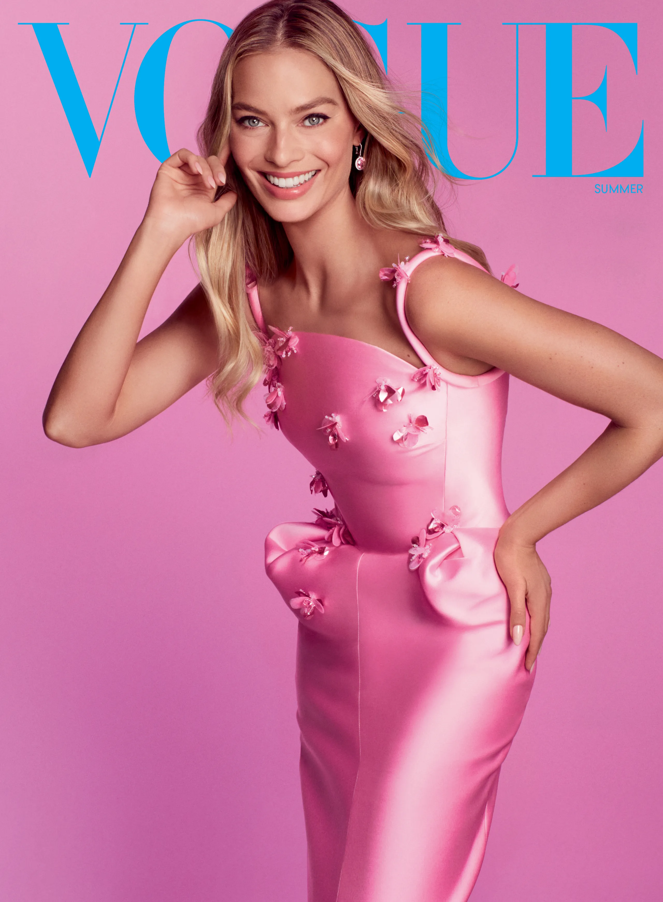
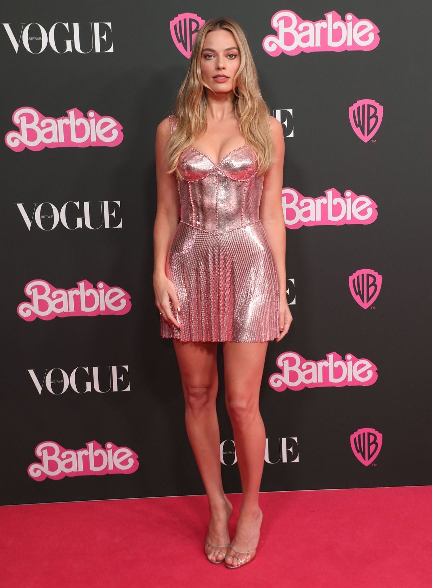

Margot Robbie - a Barbie Girl in a... not so Barbie World?


Margot Robbie, the 33-year old four time winner Golden Globe Award actress sure is T H E
perfect actress to play Barbie. Her beauty, her smile, her talent fits perfect for the role but since this
project is not about writing real articles I will just fill this out with some gibberish.
By now most of you have probably already stopped reading but if not I can tell you that summer is here (no
sh*t Sherlock) so dont forget to wear sunscreen! But if you by any chance made it THIS far, congrats to you!!
Fun surprise to know this was not all about Barbie, right?
Anyway, Barbie Barbie Barbie. Can't wait to see it. Good premiere-date: july 21s, AKA my biiirthday!